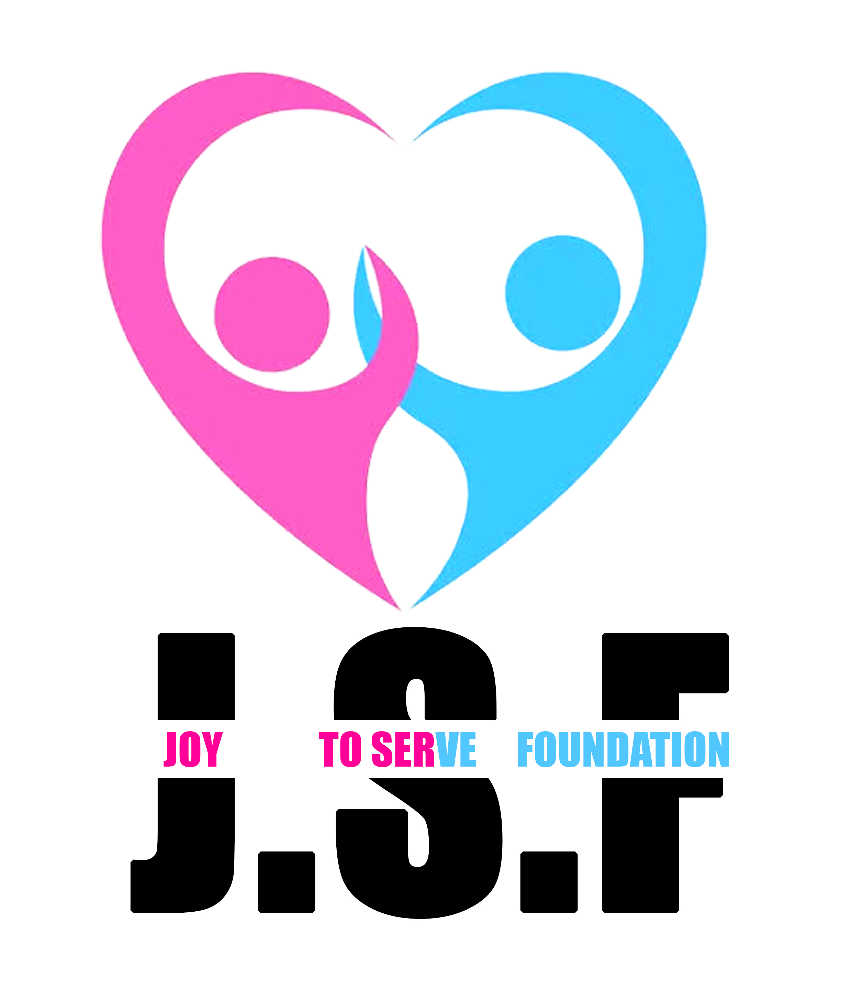

À propos de nous
Joie de Servir est un groupe de jeunes passionnés par l'idée d'apporter du bonheur et de la joie aux orphelins. Nous organisons régulièrement des visites dans des orphelinats pour passer du temps avec les enfants et leur offrir des moments de bonheur et de partage.
Nos objectifs
- Apporter de la joie et de l'affection aux enfants orphelins
- Organiser des activités ludiques et éducatives pour les enfants
- Soutenir les orphelinats en collectant des dons et des fournitures
- Sensibiliser la société à la situation des orphelins
"Le bonheur n'est réel que lorsqu'il est partagé."
- Jon Krakauer
